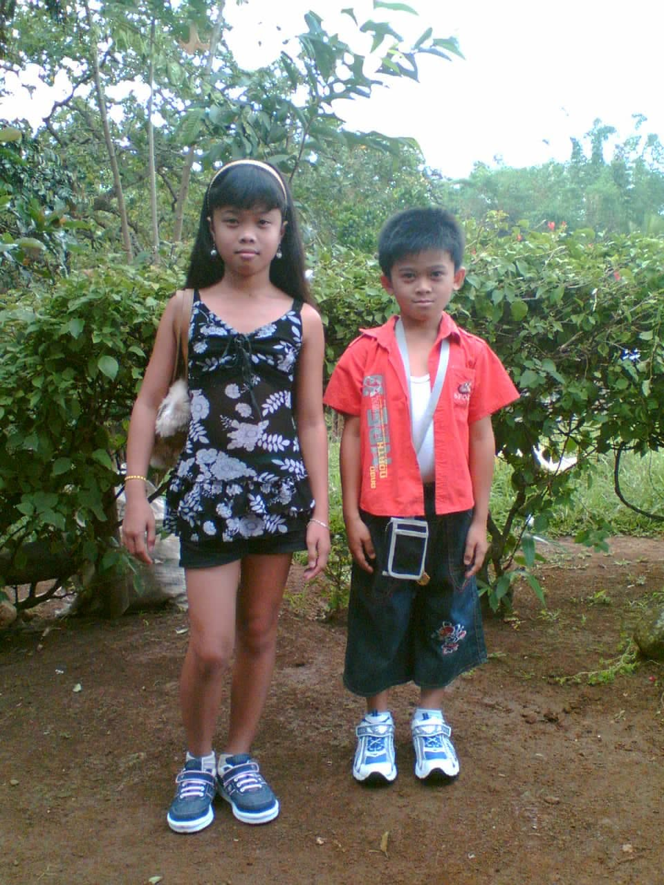
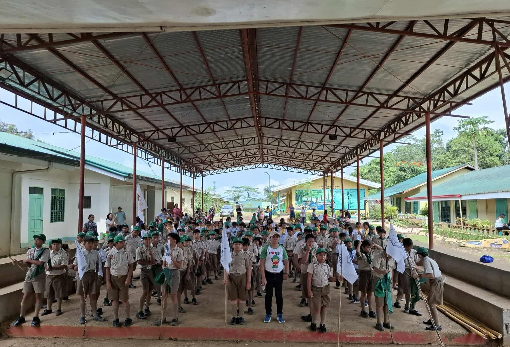
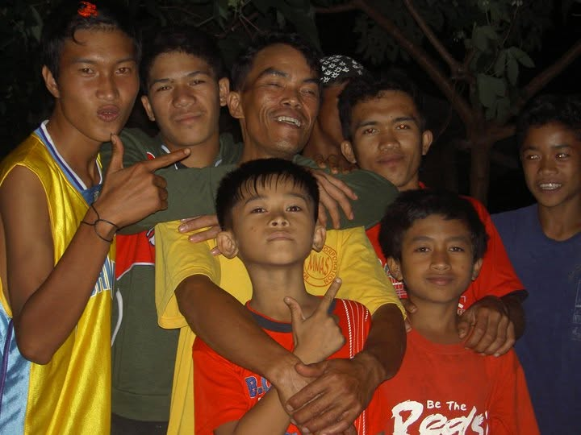
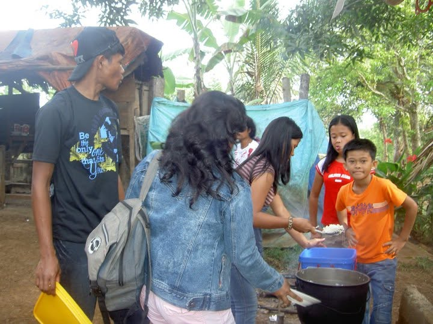
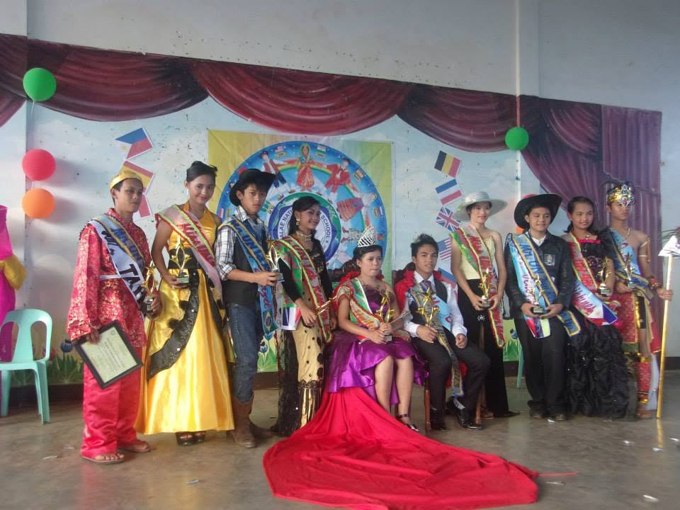
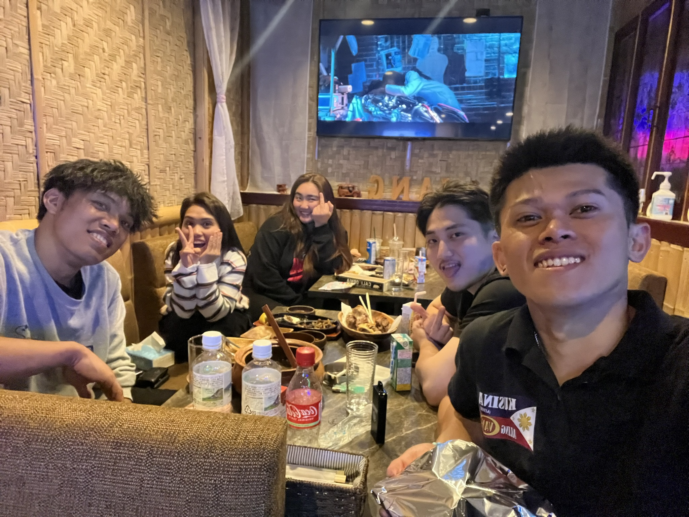

「私にとって、ダミラグは地図の上の一つの場所ではありません。」
家族がいて、友達がいて、毎日の生活があった場所。ここで過ごした時間が、私の人生の最初の一ページになりました。

観光地としてではなく、子どもの頃の私が見ていたダミラグ。何気ない道や風景も、今振り返ると大切な思い出です。



［思い出］
［思い出］
［思い出］
［思い出］
［思い出］
「私はダミラグを離れました。」
場所は変わっていく。でも、そこで過ごした時間まで消えるわけではありません。


「場所を離れても、そこで過ごした時間は、自分の中に残っている。」